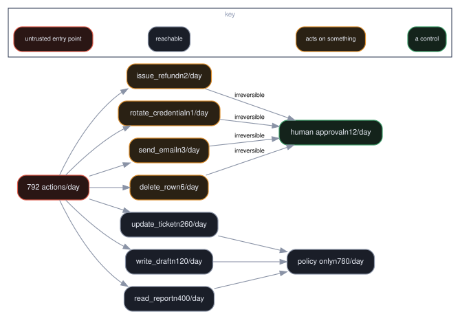

Not recorded yet. The lesson below is complete and runnable today — the video is added later without touching this page.
recordings/A3.6.mp4An approval queue at volume approves everything, and the risk register still records it as a control.
Approval reserved for irreversible actions only, with machine-generated content labelled as such.
Route actions by reversibility and measure how many reach a human under each policy.
“Run on Kaggle” opens the notebook in your own Kaggle account as a new kernel. The notebook carries no procedure: it clones this repository — shallow and sparse, the skills directory only, about three seconds — and runs skills/architecture/blast-radius-review/scripts/blast_radius_review.py out of it. Switch Internet on in the notebook settings first; Kaggle gates that on a verified phone number, and without one you can attach the dataset cybercommons/cyber-commons-skills instead. The copy is yours to edit and re-run, and nothing is written back here.
New here? A0.1 walks the whole mechanism and runs it on itself.
Function A — Securing AI Architectures → Securing the Architecture — Runtime and the Gateway · Security of AI
Builds on A3.5 · Validating what comes back.
| Tools used | standard library only |
What it covers. Route actions by reversibility and measure how many reach a human under each policy.
Why a security engineer needs it. An approval queue at volume approves everything, and the risk register still records it as a control. The control it builds is: approval reserved for irreversible actions only, with machine-generated content labelled as such.
This is a control lesson: it builds the mechanism, then breaks it, so you can see what the control is actually load-bearing for rather than taking the claim on trust.
Approval works for the rare and irreversible and fails for everything else. The design question is not whether to have a human in the loop — it is how few decisions you can put in front of them, so that each one gets read.
At CyberTravels. Approval is right for a $5,000 refund and wrong for a hotel search. The design question for CyberTravels is not whether to have a human in the loop but how few decisions reach them, so each one gets read. R2.
what reaches the human what does not
+-------------------------+ +------------------------+
| irreversible | | reversible |
| above a value threshold | | inside a budget |
| outside normal pattern | | matching prior approval|
+-------------------------+ +------------------------+
a few per day everything else
the control is the filter, not the click
Mitigates: T10 Overwhelming Human-in-the-Loop · T15 Human Manipulation.
A1.15 showed approval collapsing under volume while still reporting 100% coverage. The fix is not a better reviewer or a nicer queue. It is sending fewer things.
Route by reversibility, because that is what a human is actually useful for:
The test for whether your gate will hold is arithmetic, not intent: how many requests per day reach a human? If the answer is more than a person can consider properly, the control is already a click, and the number tells you so before the incident does.
The T15 half is one line of implementation and easy to skip: mark machine-generated content as machine-generated wherever a human reads it. A recommendation that arrives with institutional formatting recruits authority it has not earned. Labelling it does not stop anyone acting on it — it restores the scepticism they would apply to a colleague.
What this control closes.
Sends fewer things to humans, so the ones that arrive are read. The test is arithmetic: how many per day reach a person.
Routing by reversibility only works if somebody has computed what each CyberTravels agent can actually reach and damage in one run. That is a blast-radius review, and its output is an autonomy level rather than an opinion: enumerate the reachable actions with attacker-chosen arguments, not the happy path, and include time-to-stop, because how fast you can halt a run is part of how much it can cost. This is the file in this repository:
skills/architecture/blast-radius-review/SKILL.mdname: blast-radius-review
description: >-
Compute what an agent can reach and damage in a single run, and decide the
autonomy level its blast radius can support. Use when reviewing an agent
design or deployment, deciding whether an action needs human approval, sizing
a sandbox, or answering how bad it would be if an agent were fully
compromised.
allowed-tools: Read, Grep, Glob
Blast radius is not an adjective. It is the set of resources an agent can change before anyone can stop it, and it is computed from three inputs:
blast_radius = reachable_resources × action_irreversibility × time_to_human_stop
Treating it as a number is what lets it be a design constraint instead of a discussion.
At design review, before raising an agent's autonomy, and after any change that adds a tool, a credential, or a scheduled trigger.
1 — Enumerate reachable resources. For each tool the agent can call, list
what it can touch with attacker-chosen arguments — not what it touches in the
happy path. A Bash tool with unrestricted arguments reaches everything the
process can reach; record it that way rather than as one row.
2 — Grade irreversibility. Per action:
| Grade | Meaning | Example |
|---|---|---|
| 0 | read-only | query, list |
| 1 | reversible with effort | write a file, open a PR |
| 2 | reversible only with a backup | delete a row, force-push |
| 3 | irreversible or externally visible | send an email, pay, publish, rotate a key |
Grade 3 actions are the whole reason approval gates exist. An agent whose worst action is grade 0 does not need one.
3 — Measure time-to-human-stop. How long between the agent deciding and a human being able to intervene? Interactive with a prompt is seconds. A scheduled run at 03:00 with notifications off is hours. This term dominates the product more often than people expect, and it is usually the cheapest to fix.
4 — Place it on the autonomy ladder.
| Level | Meaning | Requires |
|---|---|---|
| L1 | suggests; human executes | nothing |
| L2 | acts within a bounded sandbox | reversible actions only |
| L2.5 | acts, but grade-3 actions need approval | a working approval path |
| L3 | acts unattended | demonstrated containment + audit + stop authority |
An agent at L3 whose grade-3 actions are unbounded is misclassified, not brave.
5 — Find the cheapest reduction. Usually one of: remove a credential from the environment, split one broad tool into two narrow ones, add a choke point in front of the irreversible action, or shorten time-to-stop with a notification. Recommend the one with the best radius reduction per unit of friction, and say what it costs.
Input — the fixture committed at the top of scripts/blast_radius_review.py. Edit it and re-run: the buckets, counts and verdicts below are derived from it, not hard-coded.
Output — the opening lines of a real run:
action reversible external routing per day
delete_row False False human approval 6
issue_refund False True human approval 2
read_report True False policy only 400
rotate_credential False False human approval 1
send_email False True human approval 3
update_ticket True False policy only 260
write_draft True False policy only 120
The run continues past this. The script is the example: test_skills.py executes it on every build, so this block cannot drift from what the skill actually prints.
{
"resources": [{"tool": "str", "reachable": ["str"], "unbounded": false}],
"actions": [{"action": "str", "irreversibility": 0, "why": "str"}],
"time_to_human_stop_seconds": 0,
"blast_radius": {"score": 0, "inputs": {"resources": 0, "max_irreversibility": 0, "seconds": 0}},
"autonomy": {"current": "L1|L2|L2.5|L3", "supported": "L1|L2|L2.5|L3", "mismatch": false},
"reductions": [{"change": "str", "new_score": 0, "friction": "low|medium|high"}]
}
Show inputs. A blast-radius score without its terms cannot be challenged, and
an unchallengeable metric stops being used.
action reversible external routing per day
delete_row False False human approval 6
issue_refund False True human approval 2
read_report True False policy only 400
rotate_credential False False human approval 1
send_email False True human approval 3
update_ticket True False policy only 260
write_draft True False policy only 120
actions per day : 792
reaching a human : 12
a reviewer considers ~25/day properly
gate holds? : True
Approving everything would send 792 a day to someone who can read
25. Routing by reversibility sends 12, and every one gets read.
unlabelled : libfoo has no known vulnerabilities
labelled : [machine-generated, unverified] libfoo has no known vulnerabilities
The label does not stop anyone acting on it. It restores the scepticism
they would give a colleague saying the same sentence.
scripts/render_diagrams.py. open full sizeOrange is irreversible. Every orange path ends at the human gate, and
nothing else does - which is why the gate is small enough to be read.The skill loads and reports its shape. The failure mode to carry into your own estate is the last one: raising an agent's autonomy because it has been reliable. Reliability is a measurement of the happy path; blast radius is a measurement of the worst one, and only the second bounds what an approval gate is for.
Count how many approvals your agents generate daily and compare it with 25. If you are above it, decide which actions are reversible enough to be handled by policy instead — that list is usually most of them.
Next → A3.7 · The agent gateway: one choke point when you scale
All lessons · This lesson's page · Source
Cyber Commons — a free, open commons for Cyber AI.
Notebook source: labs/notebooks/A3.6.ipynb